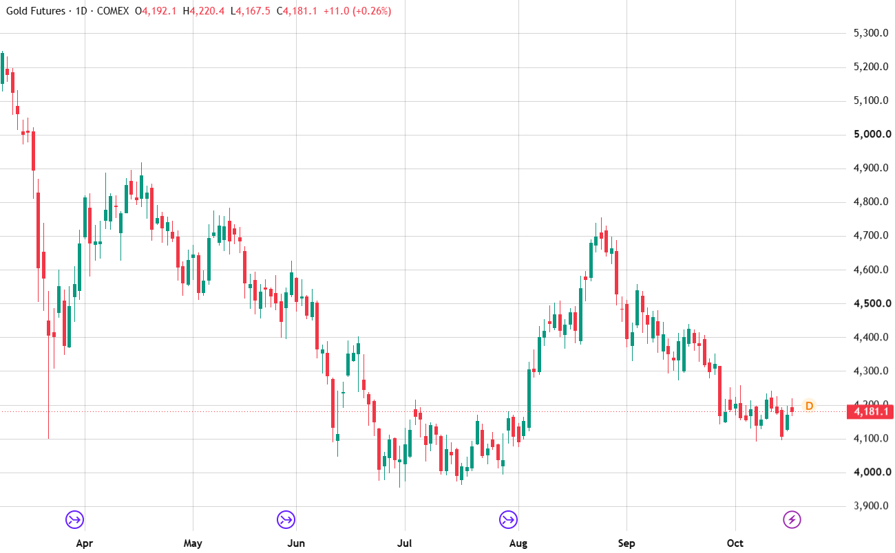

by Oscar Strahle
Every algorithm started as a written hypothesis with exact entry and exit rules.
I read books on trading and investing from Robert Carver, Kevin J. Davey, Linda Bradford Raschke, and Ray Dalio.
I studied historical charts across instruments, found something odd in the price action, then tested whether it was a repeatable pattern.

Every hypothesis was put through tests designed to break it.
2006 to June 2026, daily data on 37 markets, using back-adjusted continuous contracts. Costs: $1 per micro contract or $2 per standard contract in commission, plus 2 ticks of slippage, per side.
I iterated on each idea using 2006-2019. When I was happy, I ran it once on 2020 to present to verify performance.
Initial parameters came from defaults, literature, and domain knowledge. I tested nearby values and looked for a broad plateau around my chosen value rather than sharp spikes.
I resampled individual trades with replacement to see how much of the result was the order and mix of trades. The bold line is the real sequence; the faint lines are alternative histories.
I ran every algorithm on all 37 markets. I expected it to work across related markets; if it worked on the S&P 500 but failed on the Nasdaq-100, that was a red flag. Working on unrelated markets, like corn and the Swiss franc, was even better, and meant I could run both side by side. One algorithm worked on all 37.
Five unique algorithms trading 16 markets.
Correlation of daily returns across the full 2006-2026 period.
The portfolio targets 10% annualised volatility. Realised volatility is the standard deviation of daily returns times √252, measured over the last 3 months. Position sizes are multiplied by target ÷ realised, reset monthly.
The smooth curve and shallow drawdowns come from combining five uncorrelated algorithms across 16 different markets. Their losses rarely line up, so they largely cancel out at the portfolio level.
Three months live on sim capital, 1 July to 30 September 2026.